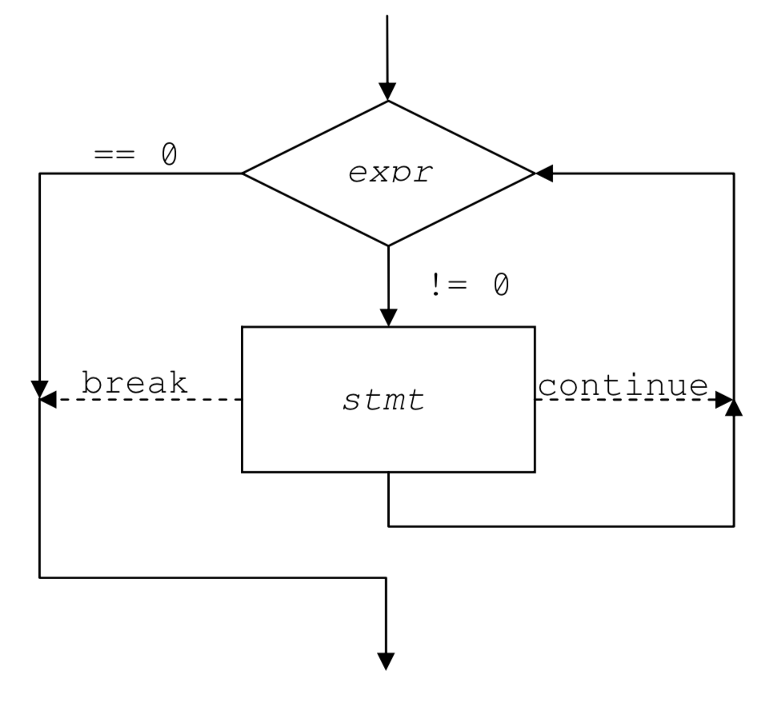
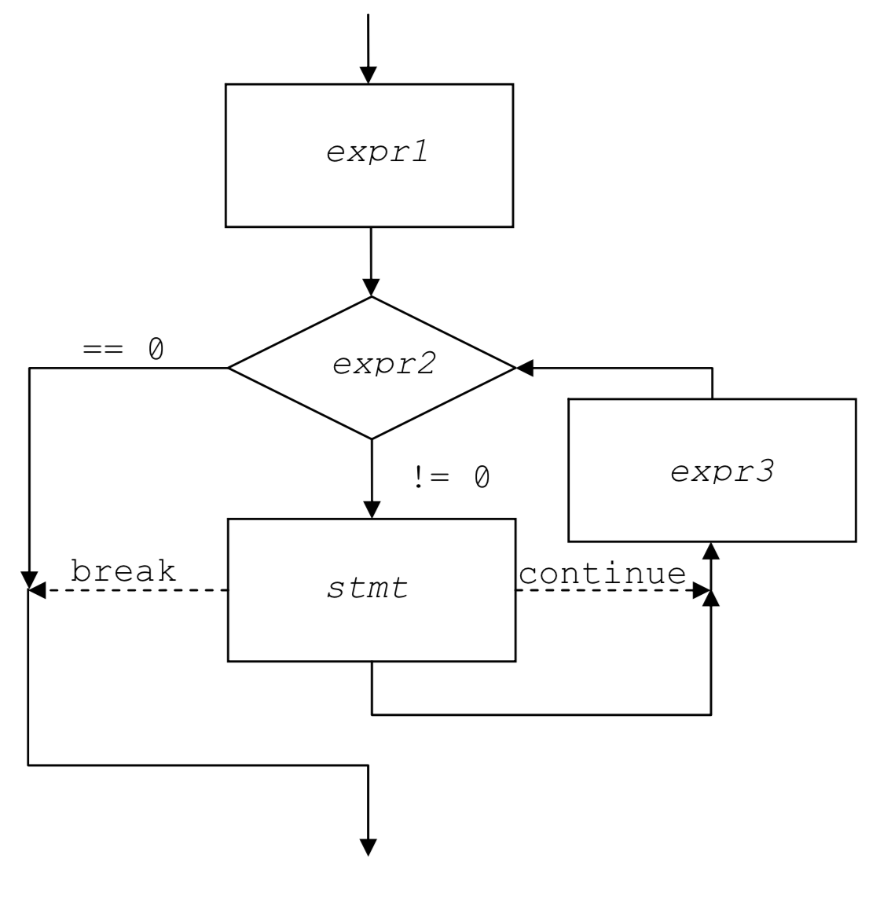
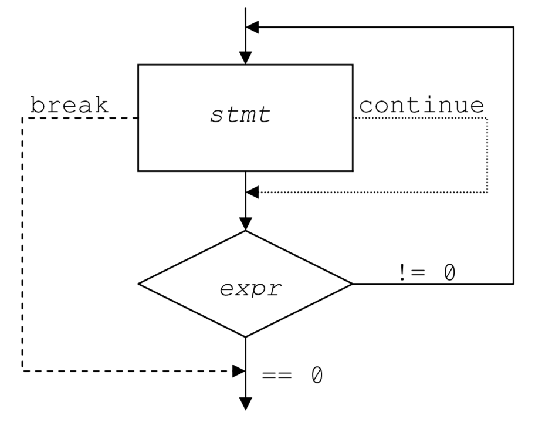

-
empty statement
empty statement = ;
used in situations where the syntax requires a statement, but there isn’t any work to be performed
for( ; ; ; )
-
Expression Statement
there is no "assignment statement" in C, how is assignment performed?
assignment is an operation just like add and sub, so assignment is performed by writing an expression.
so, statement such as
x = y + 3;
ch = getchar();
are actually expression statements, not assignment statements.
x=y+3 is an expression, by putting a semicolon at the end, it is turned into expression statement: x=y+3;
and it is perfectly legal to write statements such as:
y+3;
getchar();
these statements are evaluated and executed, but don't have any "side effects"
there do exist expression statements that have "side effects":
a++;
-
Statement Blocks
{
declarations (optional)
statements (optional)
}
a block may be used anywhere a statement is required, and it lets you use a list of statements
in places where the syntax only calls for one
-
If Statement
if( expression )
statement -> statement block
else
statement
C doesn't have a Boolean type till C99, integers are used for this purpose.
0 = false; non-0 = true
C relational operators produce integer 1 and 0 rather than 'true' and 'false':
int i = 4>3;
printf("i=%d\n", i);
$ ./a.out
i=1
-
While Statement
while( expression )
statement
-
Break and Continue Statements
break=terminate while loop prematurely
continue=terminate current iteration and continue with the next one
if they are used in nested loops, it applies only to innermost loop
-
Execution of the While
while( (ch = getchar()) != EOF )
putchar( ch );

sometimes, a while statement does all the work in its expression, and there is no
work left for the body.
while( (ch = getchar()) != EOF && ch != '\n' )
;
-
For Statement
in C, the for statement is really just a shorthand notation for a while loop.
for( expressions1; expresssion2; expression3 )
statement
expressions1 = initializationand is evaluated once before the looping begins
- expressions1 = e.g. i=0, j=1
expression2 = the condition and is evaluated before each execution of the body
expression3 = adjustment and is evaluated after the body and just before the condition is evaluated again
break and continue works on for statement as well.
- break = exits the loop immediately
- continue = goes directly to adjustment
the for is equivalent to the while statement:
expression1;
while( expression2 ){
statement
expression3;
}
-
Execution of a For

difference between for and while is with continue,
in for, continue = skip body of loop, goto expression3
in while, continue = because adjustment is part of the body, so it will be skipped too
one advantage of for in style is, it puts the operation of the loop together in one place, so it is easy to find
-
Do Statement
do
statement
while( expression );
when you need the body of the loop to be executed at least once, use a do..while

-
Switch Statement
switch( expression ) {
statement-list
}
statement-list =
case constant-expression:
statements
break;
case constant-expression:
statements
break;
expression = returns integer
execution flows through case labels rather than stopping at them. Must use break to stop.
break at the last case label is for maintenance purpose in the future...
and continue does not have effects on switch
and in order to execute the same group of statements with two or more values:
switch( expression ){
case 1:
case 2:
case 3:
statement-list
break;
case 4:
case 5:
statement-list
break;
}
-
Defaults
what if the value doesn't match any case? nothing happens
but what if you don't want to ignore expression values that do not match any case?
you can add a default label:
default:
for example:
i=4;
switch( i )
{
case 1:
printf("something\n");
default:
printf("well...\n");
case 2:
printf("another something\n");
case 3:
printf("what? why?...\n");
}
the code is going to print:
$ ./a.out
well... -> this is default one
another something -> once there is a match, the other ones will be executed as well
what? why?... -> same as above
but if we have:
i=4;
switch( i )
{
case 1:
printf("something\n");
case 3:
printf("well...\n");
case 2:
printf("another something\n");
case 4:
printf("what? why?...\n");
}
this is going to print:
$ ./a.out
what? why?...
-
Goto Statement
statement-label:
some-statements;
goto statement-label;
occasions that goto are used are rare, one is breaking out of deeply nested loops.
while( condition1 ){
while( condition2 ){
while( condition3 ){
if( somedisaster)
goto quit;
}
}
}
quit:;